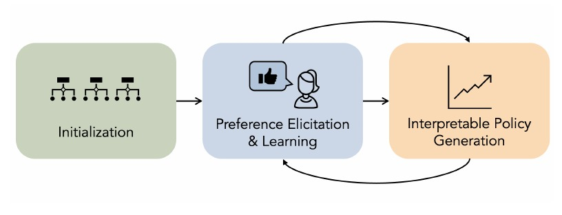
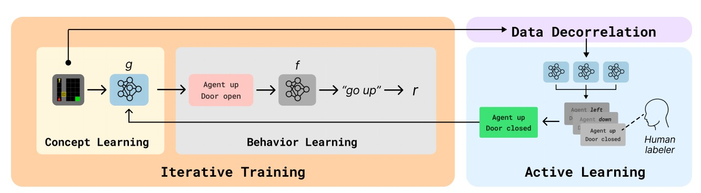
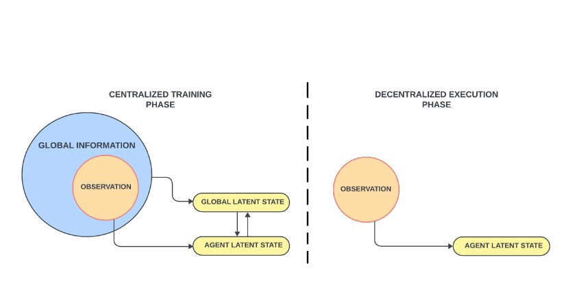
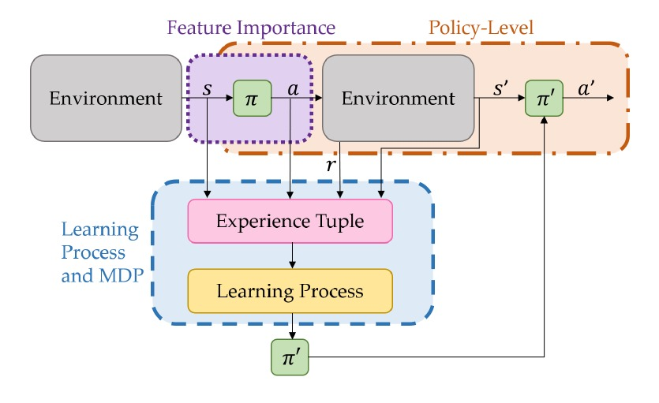
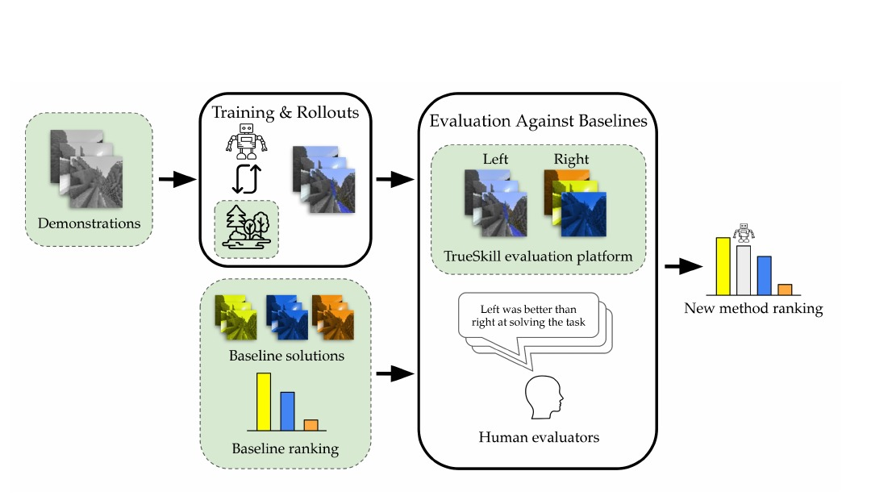

Selecting Decision-Relevant Concepts in Reinforcement Learning
Alleviates manual concept selection burden by introducing the first algorithm for automatically selecting the concepts an RL agent should use for decision making.


I am a postdoctoral researcher at Microsoft Research NY. I am also a Visiting Researcher at NYU Courant. In 2027, I will join Johns Hopkins University as an Assistant Professor in the Computer Science Department. My goal is to create practical AI agents that can learn from feedback to complement and augment human abilities. This involves designing techniques for reinforcement learning, foundation models, and human-centered AI.
I did my PhD in Machine Learning at Carnegie Mellon University, where I was advised by Fei Fang. I then spent a year as an Assistant Professor / Faculty Fellow at NYU Courant, where I worked with Rajesh Ranganath and Sumit Chopra. I am a Rising Star in ML & Systems, a Future Leader in Responsible Data Science & AI, and a Rising Star in Data Science. My dissertation received Honorable Mention for the SCS Dissertation Award. During my PhD, I interned at Microsoft Research twice, once with Geoff Gordon and once with Katja Hofmann.
Alleviates manual concept selection burden by introducing the first algorithm for automatically selecting the concepts an RL agent should use for decision making.
Aligns interpretable RL policies with preferences by interleaving preference learning with policy search via an evolutionary algorithm.

Reduces human annotation burden for concept-based interpretable RL through an active-learning-based training scheme.

Improves sample efficiency by learning a world model for multi-agent RL that shares global information during training while supporting decentralized execution.

Surveys the field of explainable RL, introducing a new taxonomy organized around the RL problem and identifying open challenges & a roadmap for future research.

Releases a large benchmark dataset (26 million image-action pairs from appx 14,000 videos & over 3,000 human pairwise evaluations) for training and benchmarking agents on open-ended, fuzzy tasks in Minecraft.

The best way to work with me is to apply to the Computer Science Master's or PhD program at JHU. I'm particularly excited about highly-motivated students who enjoy thinking deeply and carefully about human-centered and real-world-inspired challenges of AI agents. An ideal applicant should have at least one core strength (especially software engineering, machine learning research, and algorithm design) and be eager to develop further as the PhD progresses. I unfortunately cannot respond to every email regarding admissions.
NYU Email: stephaniemilani@nyu.edu; JHU Email: milani@jhu.edu
Twitter/X: @steph_milani · Bluesky: @stephmilani.bsky.social · LinkedIn